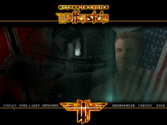
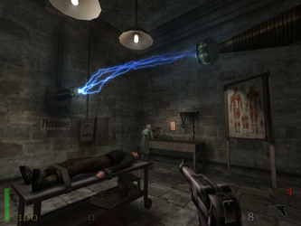
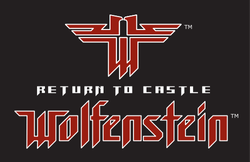

Return to Castle Wolfenstein
Dieser Artikel wurde für die folgenden Ubuntu-Versionen getestet:
Ubuntu 14.04 Trusty Tahr
Zum Verständnis dieses Artikels sind folgende Seiten hilfreich:
Return to Castle Wolfenstein  (RTCW) ist ein Ego-Shooter von id Software mit Singelplayer- und Multiplayer-Modus. Wie bei fast allen anderen id-Spielen existiert auch für RTCW eine Linuxversion, welche jedoch nicht auf der Verkaufs-CD enthalten ist, sondern separat heruntergeladen werden muss.
(RTCW) ist ein Ego-Shooter von id Software mit Singelplayer- und Multiplayer-Modus. Wie bei fast allen anderen id-Spielen existiert auch für RTCW eine Linuxversion, welche jedoch nicht auf der Verkaufs-CD enthalten ist, sondern separat heruntergeladen werden muss.
|  |  |
| Menü | Spielszene |
Installation¶
RTCW wurde in zwei verschiedenen Versionen verkauft, wobei sich die zur Linux-Installation notwendigen Schritte geringfügig unterscheiden. Die Installation der Originalversion ist etwas aufwändiger als die der Game-of-the-Year (GOTY) Edition, da sich die Extrakation der benötigten Spieldateien etwas aufwändiger gestaltet. Die folgende Anleitung ist für beide Versionen gültig.
Desweiteren werden zwei verschiedene Möglichkeiten zur Installation beschrieben. Die erste Möglichkeit basiert auf dem offiziellen von id Software veröffentlichtem Linux Installer. Dieser wurde zuletzt im Jahre 2006 in der Version 1.41b veröffentlicht und enthält den Single- und Multiplayer. Die zweite Möglichkeit basiert auf einer Weiterentwicklung des von id Software im Jahre 2010 veröffentlichtem Quelltextes des Spiels. Diese Möglichkeit bietet zwar nur den Singleplayer, enthält jedoch weitere Bugfixes und 64bit Unterstützung. Auch wurden Abhängigkeiten auf neue Libraries (SDL) umgestellt, so dass z.B. Probleme mit der Audioausgabe vermieden werden.
Installation anhand offiziellem Installer (SP + MP, Stand 2006)¶
Die im Installer enthaltenen Programmdateien haben Abhängigkeiten zum älteren Paket libstdc++2.10-glibc2.2. Dieses befindet sich in aktuellen Ubuntu Versionen leider nicht in den Paketquellen und muss daher von Hand nachinstalliert werden. Dazu lädt man die DEB-Datei hier  von den Ubuntu-Archiven herunter und installiert diese [3].
von den Ubuntu-Archiven herunter und installiert diese [3].
Nach dem Download des offiziellen Linuxinstaller wolf-linux-1.41b.x86.run (Version 1.41b, 70 MB) muss dieser noch ausführbar [4] gemacht werden [5]
chmod +x wolf-linux-1.41b.x86.run
und lässt sich dann starten [6] mit:
sudo ./wolf-linux-1.41b.x86.run
Bei einer Standardinstallation wird RTCW in das Verzeichnis /usr/local/games/wolfenstein installiert, wofür Root-Rechte [8] erforderlich sind. Man kann aber auch ein anderes Verzeichnis auswählen und dann ggfs. ohne Root-Rechte installieren.
Abschließend müssen die folgenden drei Spieldateien (640 MB) von der Verkaufs-CD extrahiert und nach /usr/local/games/wolfenstein/main (ggf. Pfad anpassen!) kopiert werden. Für weitere Details hierzu siehe Abschnitt Extraktion der Spieldateien.
pak0.pk3
sp_pak1.pk3
mp_pak0.pk3
Unter "Anwendungen → Spiele" lassen sich die Starter für den Singleplayer- sowie Multiplayer-Modus finden. Alternativ lassen sich die Modi auf der Konsole starten [6] mit
wolfsp
oder
wolfmp
Installation anhand weiterentwickeltem Quellcode (SP, Stand 2013)¶
Für die Installation aus dem weiterentwickeltem Quellcode müssen folgende Pakete installiert werden [1]:
git
g++
mesa-common-dev
libsdl1.2-dev
 mit apturl
mit apturl
Paketliste zum Kopieren:
sudo apt-get install git g++ mesa-common-dev libsdl1.2-dev
sudo aptitude install git g++ mesa-common-dev libsdl1.2-dev
Zunächst muss der Quellcode auf der Konsole heruntergeladen [5]
git clone https://github.com/hexameron/RTCW-SP-linux
und kompiliert werden
cd RTCW-SP-linux/src/unix ./cons
Die dabei erzeugten Programmdateien können nun ins gewünschte Spielverzeichnis kopiert werden. Im Folgenden wird hierzu das Verzeichnis ~/RTCW verwendet, kann aber beliebig angepasst werden.
mkdir -p ~/RTCW/main/ cp release-x86-Linux/out/wolfsp.exe ~/RTCW/wolfsp cp release-x86-Linux/out/main/* ~/RTCW/main/
Das den Quellcode beinhaltende Verzeichnis RTCW-SP-linux wird nun nicht mehr benötigt und kann gelöscht werden.
Abschließend müssen alle *.pk3 Spieldateien von der Verkaufs-CD extrahiert und nach ~/RTCW/main (ggf. Pfad anpassen!) kopiert werden. Für weitere Details hierzu siehe Abschnitt Extraktion der Spieldateien.
Das Spiel lässt sich auf der Konsole aus dem Installationsverzeichnis (~/RTCW) heraus starten [6] mit
./wolfsp
Extraktion der Spieldateien¶
Besitzer der GOTY-Edition finden die benötigten .pk3-Spieldateien im Verzeichnisbaum ihrer CDs. Ferner wartet die GOTY-Edition mit zusätzlichen Maps auf, deren .pk3-Dateien ebenfalls kopiert werden sollten.
Besitzer der Originalversion haben die Dateien nicht im Verzeichnisbaum ihrer CD - sie verstecken sich stattdessen im Windows-Installer Setup.exe. In dem Fall ist es notwendig, Wine zu installieren [7] und den Windows-Installer auszuführen. Dazu wechselt man ins Verzeichnis der CD und startet den Installer mit
wine Setup.exe
Jetzt durchläuft man die Windowsinstallation. Es kann sein dass der Installer nach dem Installieren der Spieldateien einen Fehler meldet und fragt ob man die Änderungen rückgängig machen will. Dies muss man verneinen. Die gesuchten pk3-Dateien sollten danach im folgenden Wine-Ordner zu finden sein: ~/.wine/drive_c/Programme/Return to Castle Wolfenstein/Main Nachdem man die Dateien ins main Verzeichnis der Linuxinstallation des Spiels kopiert hat, ist die Installation vollständig abgeschlossen und man kann die Daten der Wine-Installation wieder löschen um Speicherplatz zu gewinnen.
Probleme & Lösungen¶
Bei vielen Problemen rund um RTCW für Linux kann einem die offizielle FAQ weiterhelfen. Zu beachten ist dass das dortige INSTALL File veraltet ist: Es müssen nur noch drei .pk3 Files kopiert werden und der Security-Patch ist schon im Installer von Version 1.41b integriert.
Fehlermeldung: Couldn't load default.cfg¶
Die benötigten .pk3 Spieledateien wurden nicht korrekt in den Spielordner (standardmäßig /usr/local/games/wolfenstein/main) installiert oder ihre Berechtigungen sind falsch gesetzt [4].
Fehlermeldung: error while loading shared libraries: libstdc++-libc6.2-2.so.3¶
Die Bibliotheksdatei /usr/lib/libstdc++-libc6.2-2.so.3 ist nicht vorhanden. Ihre Installation wird weiter oben beschrieben.
Tastenkürzel¶
| Tastenkürzel | |
| Taste(n) | Funktion |
 | Steuerung |
| Maus bewegen | Sich umsehen |
| Q | Links lehnen |
| E | Rechts lehnen |
| Alt | Seitlich bewegen (Strafing) |
| ⇩ | Laufen oder Rennen |
| ⇧ | Sprint |
| C | Ducken |
 , ,
| Sprung |
| F , ⏎ | Aktivieren, Öffnen, Benutzen |
| X , G | Tritt |
 ,
Strg ,
Strg | Feuern / Benutzen der aktuellen Waffe |
 (Klick),
Y (Klick),
Y | 2. Feuermodus |
| R | Nachladen |
| (Hochscrollen) | Nächste Waffe |
| (Runterscrollen) | Vorherige Waffe |
| 1 | Messer |
| 2 | Pistolen |
| 3 | Maschinengewehre |
| 4 | Gewehre |
| 5 | Spiongewehre |
| 6 | Granaten |
| 7 | Raketen |
| 8 | Giftspritze |
| 9 | Flammenwerfer |
| 0 | Tesla-Waffe |
| B | Fernglas |
| N | Notizbuch (Missionsziele) |
| F5 | Schnellspeichern |
| F9 | Schnellladen |
| F11 | Bildschirmfoto aufnehmen |
Hinweis:
Bildschirmfotos werden unter ~/.wolf/main/screenshots im Format .tga abgelegt.

Infobox¶
| Return to Castle Wolfenstein | |
| Genre: | Ego-Shooter |
| Sprache: | |
| Veröffentlichung: | 2001 |
| Publisher: | Activision  |
| Systemvoraussetzungen: | mind. 400 MHZ / 128 MB RAM / 1,1 GB freier Festplattenspeicher / CD-ROM / Grafikkarte >= 16MB RAM / für Multiplayer: LAN oder Internet (mind. 56.6 Kbps) |
| Medien: | CD (1) / CD (2 |
| Strichcode / EAN / GTIN: | - |
| Läuft mit: | nativ |

- Erstellt mit Inyoka
-
 2004 – 2017 ubuntuusers.de • Einige Rechte vorbehalten
2004 – 2017 ubuntuusers.de • Einige Rechte vorbehalten
Lizenz • Kontakt • Datenschutz • Impressum • Serverstatus -
Serverhousing gespendet von